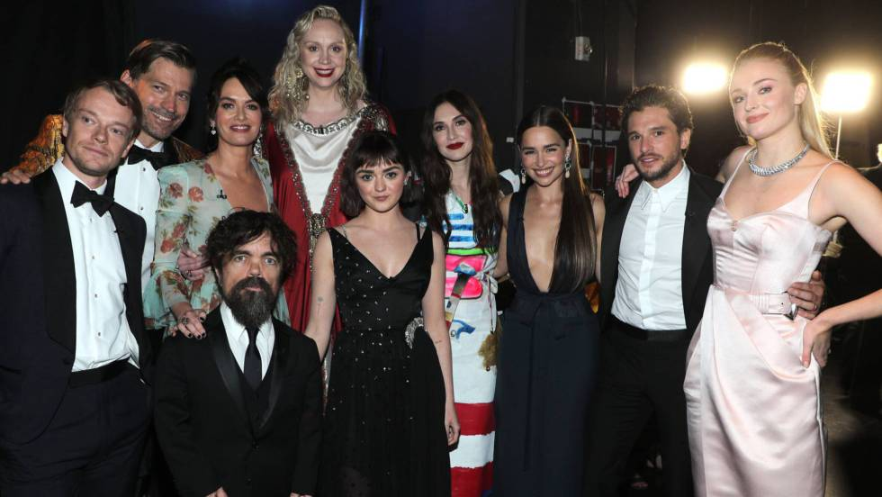
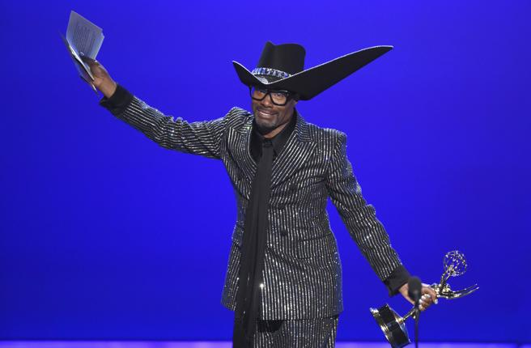
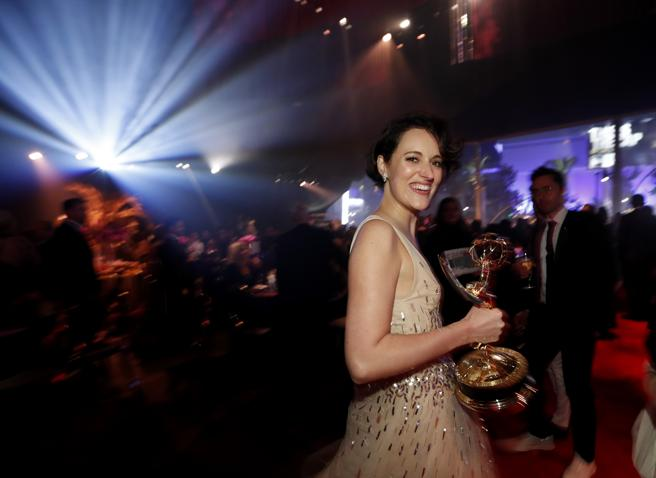
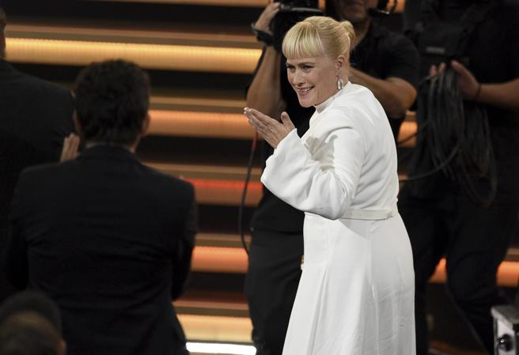

Elenco de Juego de Tronos que se despide de la pantalla este año
Locos de amor por Fleabag
triunfadoras en los Emmy 2014

Espectacular look de Billy Porter
Los Premios Emmy 2019 tenían muchos números de ser un rollo de campeonato, como mínimo entre los seriéfilos
amantes del entretenimiento y de los giros de guión. Después de la decisión de los Oscar de presentar una
ceremonia sin presentador, los premios de la televisión decidieron seguir sus pasos. Y, para rematar la
jugada, Juego de tronos y Veep estaban en modo despedida y listas para arrasar por última vez. ¿Qué
alicientes había para darle una oportunidad a los premios? Pues, según lo visto, unos cuantos porque no
faltaron las sorpresas con Juego de tronos ganando in extremis al mejor drama y Fleabag
siendo la flamante ganadora en comedia.
En el caso de Juego de tronos, era la cuarta vez consecutiva que se llevaba el premio gordo y tuvo que sufrir
a medida que avanzaba la noche. Y es que, exceptuando la (cuarta) victoria de
Peter Dinklage como actor secundario, tuvo que ver a su equipo perder una y otra vez.
¿Sería por esto que David Benioff y D.B. Weiss, al llevarse la estatuilla al mejor drama al final de la
gala, estaban tan insípidos como derrotados? ¿O sería porque lamentaban decir adiós a un proyecto que les ha
mantenido ocupados durante una década? Rodeados de todo el equipo, fueron incapaces de mostrar un solo rayo
de emoción en sus palabras de agradecimiento.
El triunfo de Phoebe Waller-Bridge

Phoebe Waller-Bridge se ha llevado tres premios Emmy por sorpresa por la serie Fleabag
La insipidez de Benioff y Weiss, de hecho, no hizo más que enfatizar que la noche había sido
de Fleabag. Esta comedia dramática proveniente del Reino Unido y que se puede ver en Amazon Prime llegaba
con el apoyo de unos medios de comunicación entusiasmados por el sentido del humor de Phoebe Waller-Bridge,
su creadora (que, para más inri, también es la creadora de Killing Eve). Sus posibilidades ante Veep y The
Marvelous Mrs Maisel eran casi nulas. Y, de forma imprevista, se llevó un total de cuatro estatuillas:
comedia, mejor actriz (Phoebe Waller-Bridge), guión
(Phoebe Waller-Bridge) y
dirección (Harry Bradbeer).
Y, si bien quizás deberíamos correr un tupido por la victoria de Black Mirror:
Bandersnatch como mejor tv-movie (sí, la interactividad dio muchos titulares pero dio para una
historia muy aburrida), HBO está de enhorabuena porque también dominó en miniserie. Chernobyl, que ya había
dominado en las categorías técnicas con siete victorias, se hizo con los premios a la mejor
miniserie, el mejor guión (Craig Mazin) y dirección
(Johan
Renck).
Incombustible Patricia

Arquette, que ya tenía un premio por Medium, posiblemente dio el discurso de agradecimiento
más personal al recordar a su difunta hermana Alexis, que no estaba allí para celebrar la victoria con ella.
“Me entristece tanto que perdí a mi hermana Alexis y que las personas trans todavía están siendo
perseguidas... Eliminemos todos los prejuicios que tenemos en todas partes”, dijo visiblemente emocionada al
mismo tiempo que reclamaba trabajos para las personas trans.